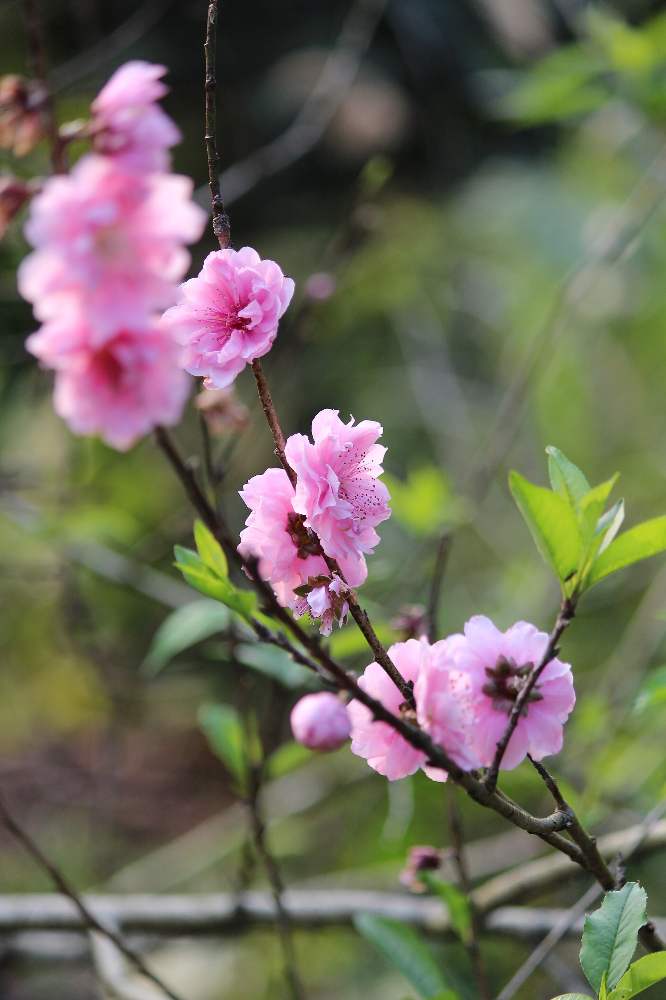
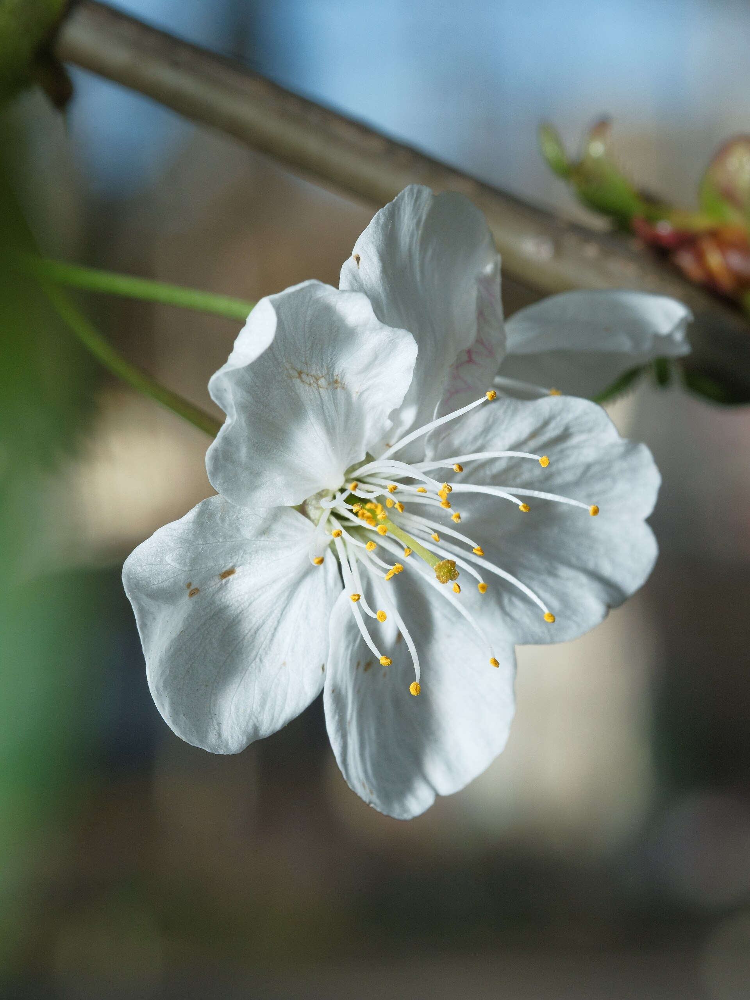
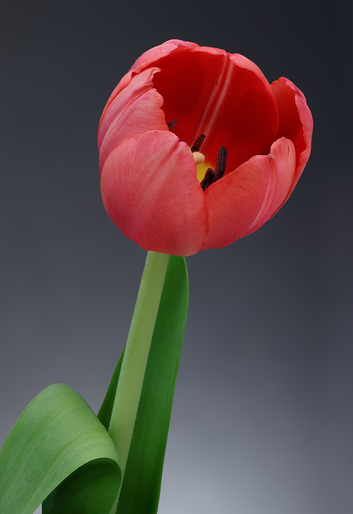
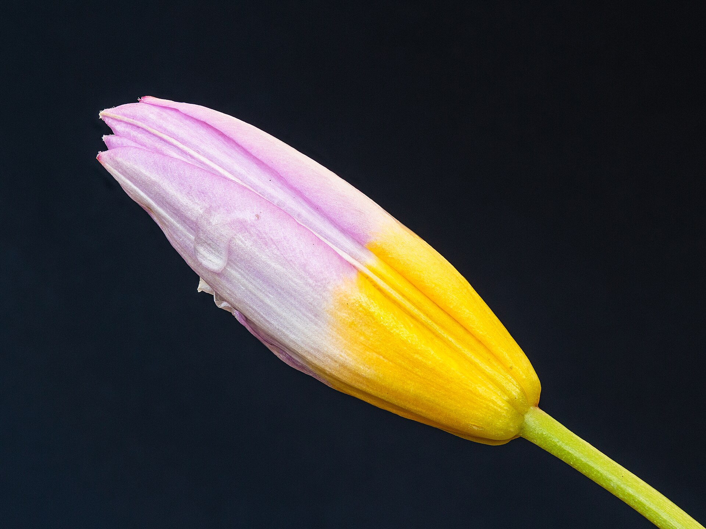
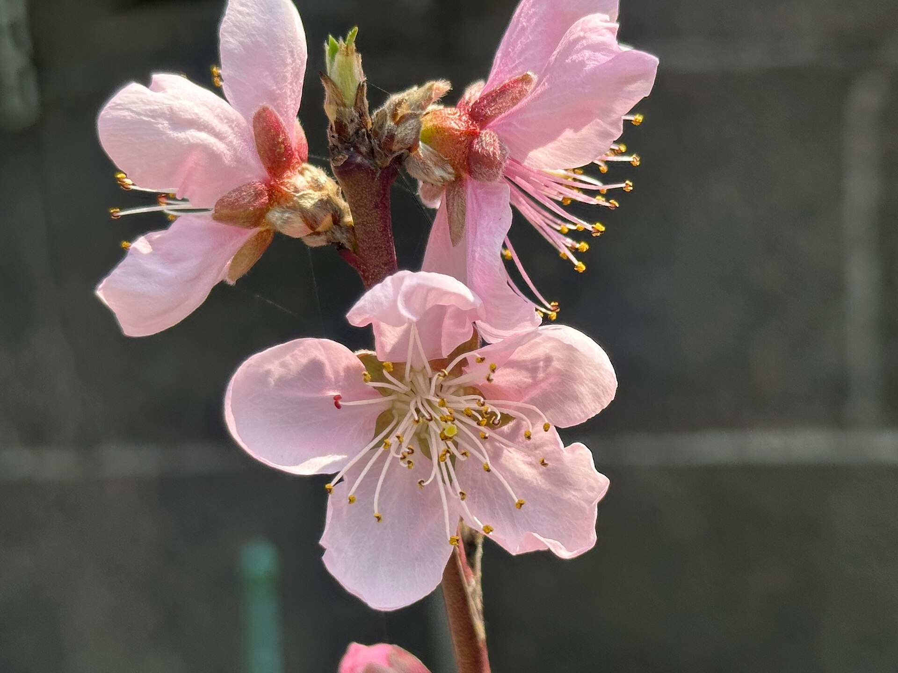
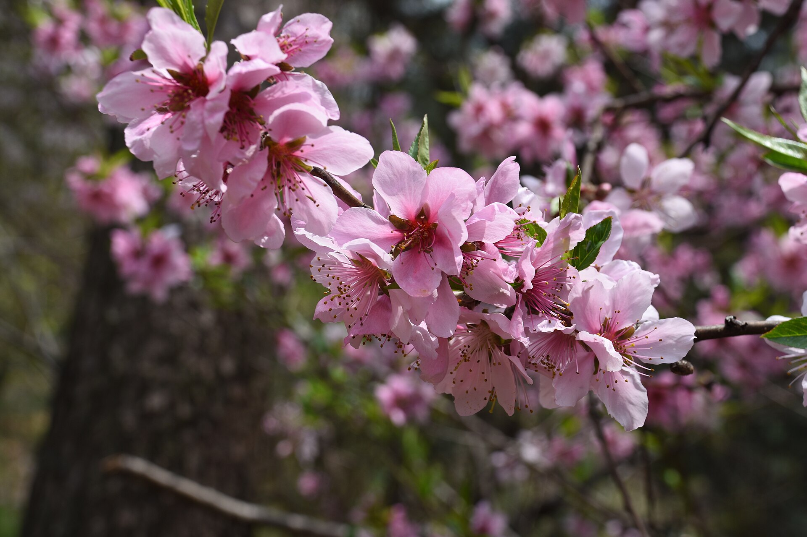

樱花、郁金香与桃花


FLOWER 01 · Prunus serrulata
樱花
性格 · 轻最迷人的地方：一整树突然变成一场雪。
- 形花瓣薄而细碎，一枝开成一片。
- 色粉白从花心晕开，越到边缘越淡。
- 气春天被它占满，风一吹就落。
编辑手记
樱花的美不在单朵，而在“突然”。它不等你准备好，开了就开，落了就落。
花语 生命与希望，也有一点“美好易逝”
适合送给 想一起看春天的人
樱花常在一周内开尽，日本人叫它“花吹雪”。它不是等你准备好的美，而是突然就来、很快就走。


FLOWER 02 · Tulipa
郁金香
性格 · 直接最迷人的地方：一支笔直，把颜色端到你面前。
- 形花瓣收成杯状，整朵花像一句话。
- 色颜色可以很纯，纯到没有杂念。
- 气不吵不闹，一支就够体面。
编辑手记
郁金香是花里的“直球”。它不绕弯，不铺垫，直接把颜色和姿态摆在那里。
花语 永恒的爱，含蓄的热烈
适合送给 想好好告白又不想太隆重的人
17世纪的荷兰曾为郁金香疯狂，一颗球茎一度贵过一座房子，是历史上最早的“花市泡沫”。


FLOWER 03 · Prunus persica
桃花
性格 · 热闹最迷人的地方：一树开满时，像淡淡的云落在枝头。
- 形花瓣圆润贴着枝开，疏密随枝走。
- 色粉得柔和，和樱花的区别藏在花梗里。
- 气是“桃花运”的那种热闹，带着人间的喜气。
编辑手记
桃花不装清高。它开在人家门口、田边，也开在古诗里，始终是一副“春天来了”的样子。
花语 春天的信使，也代表好运与桃花运
适合送给 想分享好运和春天消息的人
中国人说“桃花运”，也写“人面桃花相映红”。它不止是春天的花，还是运气和缘分的样子。